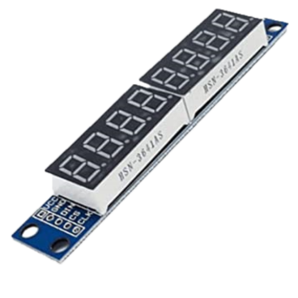
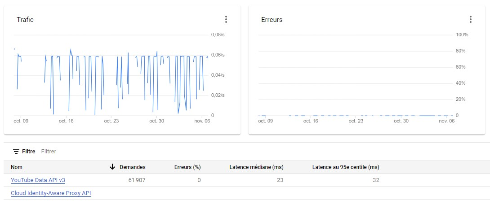
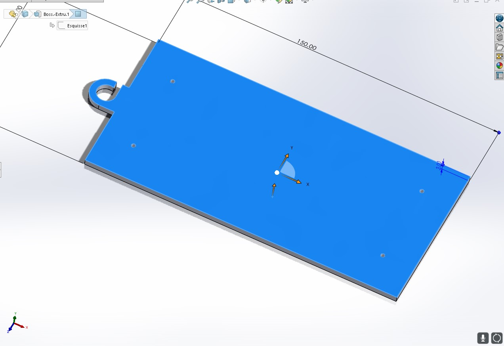
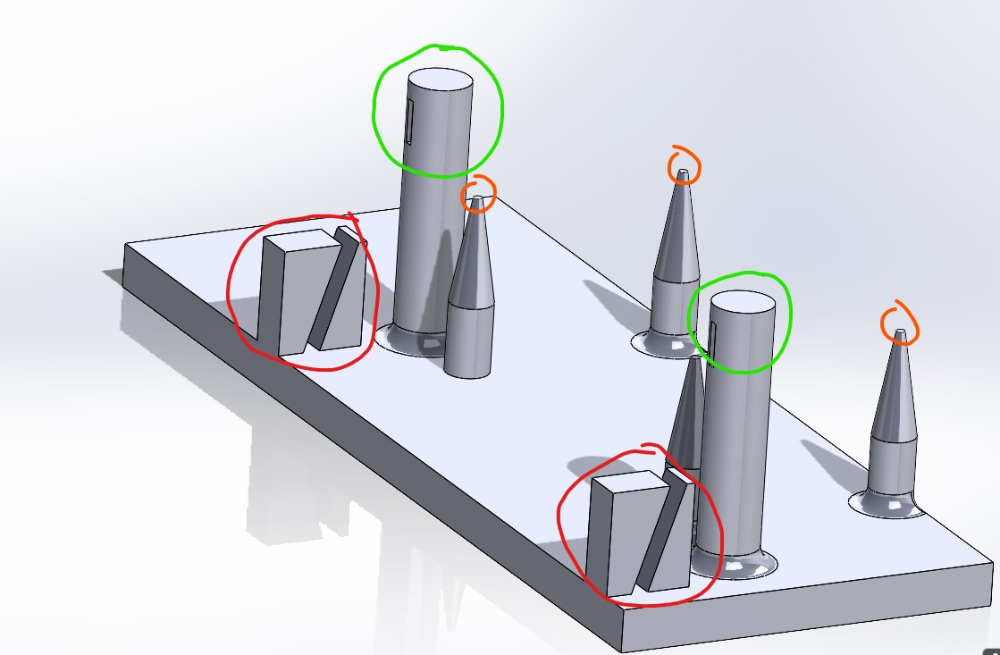
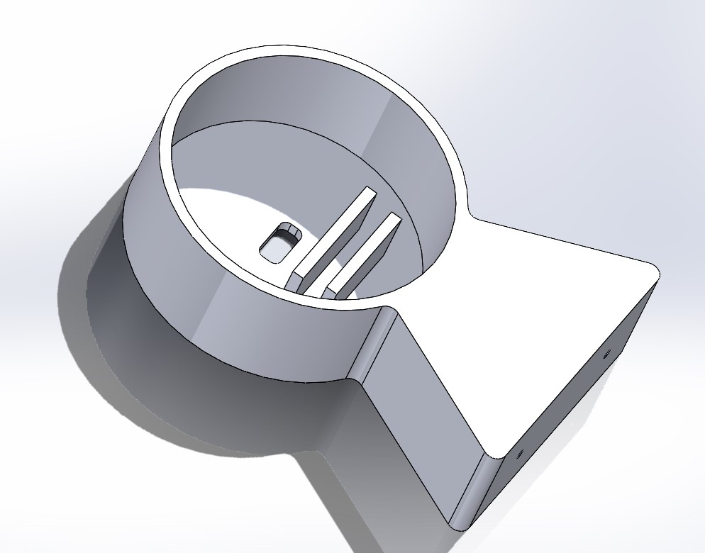
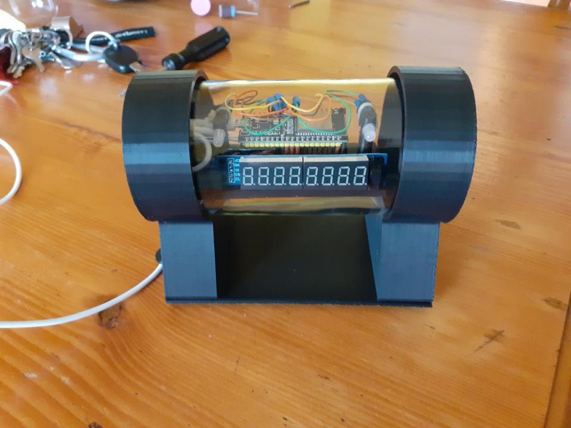

L'idée de ce compteur d'abonnés m'est venu en regardant cette vidéo:
Le but était d'en fabriquer un pour un ami qui une chaîne Youtube, à l'occasion de son anniversaire.
J'ai d'abord commandé un nodeMCU avec un esp32 intégrer pour pouvoir me connecter au Wi-Fi et commencer à tester des codes.

Ci-dessous le code, un peu long, et surtout il ne fonctionnait pas. J'ai donc commencé à enlever ce qui était superflu et à rajouter des modifications petit à petit.
// ---------------------------- // Standard Libraries // --------------------------- #include <ESP8266WiFi.h> #include <WiFiClientSecure.h> // ---------------------------- // Additional Libraries - each one of these will need to be installed. // ---------------------------- #include <YoutubeApi.h> //Seven segment pins attachecd with nodemcu pins #define a D4 #define b D0 #define c D8 #define d D9 #define e D10 #define f D3 #define g D7 #define GND1 D5 #define GND2 D2 #define GND3 D1 #define GND4 D6 int dig1 = 0; int dig2 = 0; int dig3 = 0; long subscribers = 0; long fourd = 0; long oned = 0; long twod = 0; long threed = 0; //------- Replace the following! ------ char ssid[] = "Nom du Wifi"; // your network SSID (name) char password[] = "Code wifi"; // your network key #define API_KEY "Clé API" // your google apps API Token #define CHANNEL_ID "ID de la chaîne" // makes up the url of channel //------- ---------------------- ------ WiFiClientSecure client; YoutubeApi api(API_KEY, client); unsigned long timeBetweenRequests = 60000; unsigned long nextRunTime; long subs = 0; void setup() { Serial.begin(115200); // pinMode(a, OUTPUT); pinMode(b, OUTPUT); pinMode(c, OUTPUT); pinMode(d, OUTPUT); pinMode(e, OUTPUT); pinMode(f, OUTPUT); pinMode(g, OUTPUT); pinMode(GND1, OUTPUT); pinMode(GND2, OUTPUT); pinMode(GND3, OUTPUT); pinMode(GND4, OUTPUT); // Set WiFi to station mode and disconnect from an AP if it was Previously // connected WiFi.mode(WIFI_STA); WiFi.disconnect(); delay(100); // Attempt to connect to Wifi network: Serial.print("Connecting Wifi: "); Serial.println(ssid); WiFi.begin(ssid, password); while (WiFi.status() != WL_CONNECTED) { Serial.print("."); delay(500); } Serial.println(""); Serial.println("WiFi connected"); Serial.println("IP address: "); IPAddress ip = WiFi.localIP(); Serial.println(ip); // Requis si ESP8266 V2.5 or above client.setInsecure(); // If you want to enable some extra debugging api._debug = true; } void loop() { if (millis() > nextRunTime) { if(api.getChannelStatistics(CHANNEL_ID)) { for (int i = 1; i <= 200; i++){ digitalWrite( GND4, HIGH); //digit 4 DisplayNumber(10); delay(4); digitalWrite( GND4, LOW); delay(4); digitalWrite( GND3, LOW); delay(4); digitalWrite( GND2, LOW); digitalWrite( GND1, HIGH); //digit 1 DisplayNumber(10); delay(4); digitalWrite( GND1, LOW); } Serial.println("---------Stats---------"); Serial.print("Subscriber Count: "); Serial.println(api.channelStats.subscriberCount); subscribers = api.channelStats.subscriberCount; oned = (subscribers / 1U) %10; twod = (subscribers / 10U) %10; threed = (subscribers / 100U) %10; fourd = (subscribers / 1000U) %10; Serial.print("sub digit: "); Serial.println(fourd); Serial.println(threed); Serial.println(twod); Serial.println(oned); Serial.print("View Count: "); Serial.println(api.channelStats.viewCount); Serial.print("Comment Count: "); Serial.println(api.channelStats.commentCount); Serial.print("Video Count: "); Serial.println(api.channelStats.videoCount); Serial.println("------------------------"); } nextRunTime = millis() + timeBetweenRequests; } digitalWrite( GND4, HIGH); //digit 4 DisplayNumber(oned); delay(4); digitalWrite( GND4, LOW); digitalWrite( GND3, HIGH); //digit 3 DisplayNumber(twod); delay(4); digitalWrite( GND3, LOW); digitalWrite( GND2, HIGH); //digit 2 DisplayNumber(threed); delay(4); digitalWrite( GND2, LOW); digitalWrite( GND1, HIGH); //digit 1 DisplayNumber(fourd); delay(4); digitalWrite( GND1, LOW); } void DisplayNumber(int x) { switch (x) { case 0: zero(); break; case 1: one(); break; case 2: two(); break; case 3: three(); break; case 4: four(); break; case 5: five(); break; case 6: six(); break; case 7: seven(); break; case 8: eight(); break; case 9: nine(); break; case 10: eyesOpened(); break; } } void zero() { digitalWrite( a, LOW); digitalWrite( b, LOW); digitalWrite( c, LOW); digitalWrite( d, LOW); digitalWrite( e, LOW); digitalWrite( f, LOW); digitalWrite( g, HIGH); } void one() { digitalWrite( a, HIGH); digitalWrite( b, LOW); digitalWrite( c, LOW); digitalWrite( d, HIGH); digitalWrite( e, HIGH); digitalWrite( f, HIGH); digitalWrite( g, HIGH); } void two() { digitalWrite( a, LOW); digitalWrite( b, LOW); digitalWrite( c, HIGH); digitalWrite( d, LOW); digitalWrite( e, LOW); digitalWrite( f, HIGH); digitalWrite( g, LOW); } void three() { digitalWrite( a, LOW); digitalWrite( b, LOW); digitalWrite( c, LOW); digitalWrite( d, LOW); digitalWrite( e, HIGH); digitalWrite( f, HIGH); digitalWrite( g, LOW); } void four() { digitalWrite( a, HIGH); digitalWrite( b, LOW); digitalWrite( c, LOW); digitalWrite( d, HIGH); digitalWrite( e, HIGH); digitalWrite( f, LOW); digitalWrite( g, LOW); } void five() { digitalWrite( a, LOW); digitalWrite( b, HIGH); digitalWrite( c, LOW); digitalWrite( d, LOW); digitalWrite( e, HIGH); digitalWrite( f, LOW); digitalWrite( g, LOW); } void six() { digitalWrite( a, LOW); digitalWrite( b, HIGH); digitalWrite( c, LOW); digitalWrite( d, LOW); digitalWrite( e, LOW); digitalWrite( f, LOW); digitalWrite( g, LOW); } void seven() { digitalWrite( a, LOW); digitalWrite( b, LOW); digitalWrite( c, LOW); digitalWrite( d, HIGH); digitalWrite( e, HIGH); digitalWrite( f, HIGH); digitalWrite( g, HIGH); } void eight() { digitalWrite( a, LOW); digitalWrite( b, LOW); digitalWrite( c, LOW); digitalWrite( d, LOW); digitalWrite( e, LOW); digitalWrite( f, LOW); digitalWrite( g, LOW); } void nine() { digitalWrite( a, LOW); digitalWrite( b, LOW); digitalWrite( c, LOW); digitalWrite( d, LOW); digitalWrite( e, HIGH); digitalWrite( f, LOW); digitalWrite( g, LOW); } void oo() { digitalWrite( a, HIGH); digitalWrite( b, HIGH); digitalWrite( c, LOW); digitalWrite( d, LOW); digitalWrite( e, LOW); digitalWrite( f, HIGH); digitalWrite( g, LOW); } void eyesOpened(){ digitalWrite( a, LOW); digitalWrite( b, HIGH); digitalWrite( c, LOW); digitalWrite( d, LOW); digitalWrite( e, LOW); digitalWrite( f, HIGH); digitalWrite( g, LOW); }
Pour commencer, j'ai enlevé la partie du code de l'afficheur 7 segements, car j'en ai utilisé un avec une puce MAX7219, qui, avec sa bibliothèque, permet d'afficher directement des nombres sans s'occuper individuellement de chaque led. En plus cela nous permet de réduire le nombres de fils pour l'afficheur.

Ensuite je me suis connecté avec mon compte google pour accéder à l'API de Youtube et donc récupérer le nombre d'abonnés, le nombre de vidéos, etc..., qui sont actualisé plusieurs fois par heure. Bien-sûr j'ai dû demander une clé qui correspondait à la chaîne youtube en question pour avoir accès à ses statistiques.

j'ai rajouté les bibliothèques requises (notamment remplacer celle esp8266 par celle de l'esp32, wifi.h et wifiClientsecure.h), celle pour l'afficheur.
J'arrivais à afficher des nombres, mais les variables comme le nombre de vidéos, le nombres total de vues, et le nombre d'abonnés restaient systématiquement à zéro.
Cependant aucune erreur lors de la compilation, et je pouvais ping depuis mon nodeMCU, impossible de trouver l'erreur.
Finalement après de longues heures de recherches, j'ai trouvé la raison: la bibliothèque permettant de communiquer avec l'API était obsolète, grâce à une vidéo d'une personne qui avait le même soucis j'ai pu trouver une bibliothèque qui fonctionne et la remplacer. Enfin ça fonctionnait!
Ci-dessous le code final, j'en ai profité pour rajouter deux LEDS RGBS qui traînaient dans mon matériel. La PWM se fait un peu différement sur ce microcontrolleur mais c'était de loin la partie la plus facile.
#include <ArduinoJson.h> #include "DigitLedDisplay.h" #include <YoutubeApi.h> #include <WiFi.h> #include <WiFiClientSecure.h> #define delayTime 20 int pwmChannel = 0; //Choisit le canal 0 int pwmChannel1 = 1; //Choisit le canal 0 int pwmChannel2 = 2; //Choisit le canal 0 int frequence = 1000; //Fréquence PWM de 1 KHz int resolution = 8; // Résolution de 8 bits, 256 valeurs possibles int Red = 27; int Green = 14; int Blue = 12; int redVal; int blueVal; int greenVal; // ---------------------------- // Additional Libraries - each one of these will need to be installed. // ---------------------------- // Library for connecting to the Youtube API // Search for "youtube" in the Arduino Library Manager // https://github.com/witnessmenow/arduino-youtube-api // Library used for parsing Json from the API responses // Search for "Arduino Json" in the Arduino Library manager // https://github.com/bblanchon/ArduinoJson //------- Replace the following! ------ char ssid[] = "le SSID de ma box"; // your network SSID (name) char password[] = "le mot de passe de ma box"; // your network key #define API_KEY "ma clé d'API" // your google apps API Token #define CHANNEL_ID "La clé permettant d'identifier sa chaine" // makes up the url of channel //------- ---------------------- ------ DigitLedDisplay ld = DigitLedDisplay(18, 5, 17); WiFiClientSecure client; YoutubeApi api("La clé de l'API", client); unsigned long timeBetweenRequests = 10000; unsigned long nextRunTime; long subs = 0; void setup() { Serial.begin(115200); /* Set the brightness min:1, max:15 */ ld.setBright(10); /* Set the digit count */ ld.setDigitLimit(8); // Configuration du canal 0 avec la fréquence et la résolution choisie ledcSetup(pwmChannel, frequence, resolution); ledcSetup(pwmChannel1, frequence, resolution); ledcSetup(pwmChannel2, frequence, resolution); // Assigne le canal PWM au pin 23 ledcAttachPin(Red, pwmChannel); ledcAttachPin(Green, pwmChannel1); ledcAttachPin(Blue, pwmChannel2); // Créer la tension en sortie choisi // Attempt to connect to Wifi network: Serial.print("Connecting Wifi: "); Serial.println(ssid); /* Explicitly set the ESP32 to be a WiFi-client, otherwise, it by default, would try to act as both a client and an access-point and could cause network-issues with your other WiFi-devices on your WiFi-network. */ WiFi.mode(WIFI_STA); WiFi.begin(ssid, password); while (WiFi.status() != WL_CONNECTED) { Serial.print("."); delay(500); } Serial.println(""); Serial.println("WiFi connected"); Serial.println("IP address: "); IPAddress ip = WiFi.localIP(); Serial.println(ip); client.setInsecure(); } void loop() { if(api.getChannelStatistics(CHANNEL_ID)) { int redVal = 255; int blueVal = 0; int greenVal = 0; for( int i = 0 ; i < 255 ; i += 1 ) { greenVal += 1; redVal -= 1; ledcWrite(pwmChannel1, 255 - greenVal ); //1.65 V ledcWrite(pwmChannel, 255 - redVal ); //1.65 V delay( delayTime ); } ld.clear(); ld.printDigit(api.channelStats.videoCount); Serial.print("Video Count: "); Serial.println(api.channelStats.videoCount); redVal = 0; blueVal = 0; greenVal = 255; for( int i = 0 ; i < 255 ; i += 1 ) { blueVal += 1; greenVal -= 1; ledcWrite(pwmChannel2, 255 - blueVal ); //1.65 V ledcWrite(pwmChannel1, 255 - greenVal ); delay( delayTime ); } ld.clear(); ld.printDigit(api.channelStats.viewCount); Serial.print("View Count: "); Serial.println(api.channelStats.viewCount); redVal = 0; blueVal = 255; greenVal = 0; for( int i = 0 ; i < 255 ; i += 1 ){ redVal += 1; blueVal -= 1; ledcWrite(pwmChannel, 255 - redVal ); //1.65 V ledcWrite(pwmChannel2, 255 - blueVal ); delay( delayTime ); } ld.clear(); ld.printDigit(api.channelStats.subscriberCount); Serial.print("Subscriber Count: "); Serial.println(api.channelStats.subscriberCount); } }
Comme le micro-contrôleur ne peut pas gérer deux tâches en même temps, l'écran s'actualisant toutes les 5 secondes et les LEDS baucoup plus vite, cela posait problème car l'écran devenait illisible puiqu'il changeait d'élément à la même fréquence que les LEDS (bien que grâce à millis() on peut se débrouiller mais je ne connaissais pas à l'époque). Donc au final, les LEDS font un fondu entre chaque couleurs, et une fois la couleur atteinte la statistique affichée change, et ainsi de suite.
On fait varier chaque couleur R G B de 0 à 255 en PWM ce qui fait passer les LEDS par chaque couleur intermédiaire.
Une fois que la partie programmation est finie et que tout fonctionne, je garde le code de côté pour pouvoir remplacer les identifiants de la box une fois que je l'aurai offert.
Après je suis passé à la modélisation, j'ai décidé de faire rentrer le système dans un bocal en verre, fermé de part et d'autre avec un support imprimé en 3D, qui sera placé horizontalement.
J'ai d'abord commencer à relevé les mesures du bocal afin de modéliser les deux bouchons et leurs espacements, et aussi comment je pourrais faire tenir le tout à l'intérieur

J'ai donc modéliser deux bouchons, un avec l'entrée pour la prise microUSB et deux rebords pour tenir la plaque ci-dessous: entouré en rouge, le support pour l'afficheur 7 segments, en vert, les supports pour les deux LEDS, et en orange, des picots que je viendrais faire fondre pour maintenir le nodeMCU en place.


Une fois tout imprimé en 3D, j'ai passé un coup de Dremel sur certains surfaces pour enlever les défauts d'impressions.
Voici le compteur assemblé, tout est soudé à même le micro-contrôleur, les résistances des LEDS aussi. Pour éviter qu'il y ai des contacts j'ai mis des manchons sur chaque soudure, et du souplisseau sur les câbles.

Et enfin le tout installé et sous tension:

Je n'ai pas de photos de l'assemblage car à part les codes, je ne documente quasiment pas.